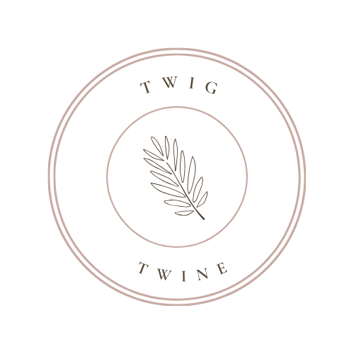

Welcome to Twig and Twine, where the beauty of nature meets the artistry of floral design. Nestled in the heart
of Austin, our boutique flower shop is a haven for those who appreciate the elegance and charm that flowers
bring to any occasion.
At Twig and Twine, we believe that flowers have the power to express emotions,
evoke memories, and create moments of joy. Whether you're celebrating a special milestone, expressing love, or
simply brightening someone's day, our carefully curated selection of blooms is designed to convey your
sentiments with grace and style.
What sets us apart is our commitment to quality and personalized
service. Every arrangement that leaves our shop is a testament to our passion for floral design. Our skilled
florists handpick each stem, combining colors, textures, and fragrances to create stunning bouquets that leave a
lasting impression.
As a small, local business, we take pride in being an integral part of the
community. Our journey began with a deep love for flowers and a desire to share that love with our neighbors.
Over the years, we've had the privilege of being part of countless weddings, birthdays, anniversaries, and
moments both big and small.

 />
/>